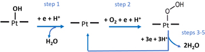
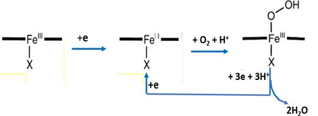
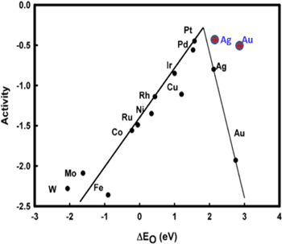
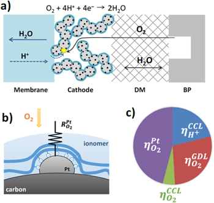

Capítol 5 Química de Materials
(darrera actualització: 6 de març de 2026)
Índex
5.1 Introducció
Els automòbils moderns han millorat en rendiment, seguretat i eficiència gràcies a materials avançats com la fibra de vidre i de carboni, lleugers però resistents. Aquests materials poden dissipar l’energia dels impactes i no es corroïxen com l’acer. També contribueixen a reduir el consum de combustible. La química és clau en el desenvolupament d’aquests materials d’alta tecnologia.
5.2 Plàstics i polímers
Els materials plàstics van revolucionar literalment la indústria de l’automòbil, principalment perquè ofereixen avantatges mecànics i de fabricació importants respecte a components de fusta i metall. Es poden modelar fàcilment en formes complexes, són gairebé totalment resistents a la corrosió, es poden fabricar en una àmplia gamma de colors sense necessitat de pintar-los, es poden utilitzar en procediments de cromat per fer peces lleugeres, i resisteixen els cops i les fractures. Poden ser molt rígids i resistents, com els policarbonats; tous i duradors, com els poliuretans; i poden ser opacs o transparents, segons el grau de cristallinitat del polímer (veure Figura 5.1). En general, els materials amorfs, com el vidre, són transparents perquè no tenen una disposició ordenada d’àtoms a llarg abast que pugui bloquejar la llum[3, 11].
Entre els inconvenients dels polímers hi ha una resistència menor a altes temperatures que els metalls i la possibilitat de reaccions fotoquímiques que poden degradar l’estructura o la pigmentació del polímer. Tanmateix, el baix cost, la lleugeresa i la facilitat de treballar-los solen compensar aquestes limitacions. Com que els plàstics són polímers orgànics, cal entendre la química dels polímers per parlar de la seva producció. Dos paràmetres importants dels materials són (veure Figura 5.2)[6]:
-
• Temperatura de fusió (): És la temperatura a la qual els dominis cristal.lins perden la seva estructura, és a dir, es fonen. A mesura que augmenta la cristallinitat, també augmenta .
-
• Temperatura de transició vítria (): És la temperatura per sota de la qual els dominis amorfs perden la mobilitat estructural de les cadenes del polímer i esdevenen vidres rígids.
També es classifiquen segons la seva estructura[6]:
-
• Grau de polimerització, segons les condicions de síntesi es poden obtenir longituds de les cadenes moleculars de diferent grandària i, per tant, amb propietats lleugerament diferents. Una altra característica important és la dels copolímers, polímers formats per més d’un tipus de monòmer. Segons l’ordre de repetició, poden ser:
-
– Alternats: (-A-B-A-B-)
-
– Periòdics: (A-B-B-A-B-A-A-A-B)
-
– Estadístics: probabilitat determinada de repetició
-
– Aleatoris: sense ordre de repetició
-
– Per blocs: (A-A-A-B-B-B-A-A)
Els copolímers són freqüents en els pneumàtics i altres components elàstics (veure Secció 5.2.4).
-
-
• Entramat branching (ramificat), consisteix a crear unions entre diferents cadenes del mateix polímer per augmentar la seua duresa i punt de fusió. Per exemple, és el cas del polietilè.
-
• Unions pont cross-linking (entrecreuat). Un exemple clàssic és la vulcanització del cautxú usant sofre. El cautxú natural és el cispoliisoprè (que és un polímer insaturat) i quan s’afegeix sofre entre 1-5% es produeixen ponts de sofre entre diferents cadenes polimèriques, el que es coneix com vulcanitzat, fenomen que augmenta molt la duresa i resistència al desgast. El producte de vulcanització completa (40 %) és l’ebonita i és un sòlid dur i rígid.
5.2.1 Polimerització
La polimerització és el procés químic pel qual es connecten els blocs constructius coneguts com a monòmers per formar llargues molècules de cadena (veure Figura 5.4). Hi ha dues maneres generals de generar plàstics (Carothers, 1929): polimerització per etapes o per condensació i polimerització en cadena o per addició.
Polimerització per etapes o per condensació
En la polimerització per etapes, dos monòmers es poden enllaçar en qualsevol moment; el creixement pot començar en qualsevol lloc i el monòmer desapareix ràpidament. El pes molecular mitjà augmenta amb el temps. Sovint, aquestes reaccions tenen lloc per condensació, on es perden àtoms de cada monòmer durant l’enllaç. Moltes condensacions alliberen aigua, com quan un grup hidroxil reacciona amb un hidrogen ionitzable d’un àcid carboxílic. La Figura 5.4 mostra exemples de polímers formats per polimerització per etapes. Els polímers formats per reaccions de condensació són generalment més resistents a la calor i a la degradació química que els formats per reaccions d’addició (veure la Secció 5.2.1).

La primera fibra polimèrica totalment sintètica, el niló-6,6, va ser produïda l’any 1938 per la companyia DuPont. El químic principal de l’equip de DuPont era Wallace H. Carothers, qui va raonar que les propietats de la seda podien imitar-se construint una cadena polimèrica formada per enllaços amida repetits, tal com passa amb les proteïnes de la seda.
El niló-6,6 es crea a partir de la reacció entre l’ (àcid adípic o 1,6-hexandioic) i l’ (1,6-hexandiamina), que donen lloc a una sal que, un cop escalfada, forma múltiples enllaços amida mitjançant una substitució acil nucleòfila. El producte és una poliamida anomenada niló-6,6. Els números del nom fan referència al nombre de carbonis en cada monòmer: el primer “6” indica els carbonis de la diamina, i el segon “6”, els del diàcid. Variant el nombre de carbonis en cada monòmer es poden obtenir molts tipus de nylons diferents.
Els nylons són entre les fibres sintètiques més utilitzades. S’empren en cordes, veles, catifes, roba, pneumàtics, raspalls i paracaigudes. Són coneguts per la seva alta resistència i durabilitat contra l’abrasió. També poden ser modelats en blocs per a l’ús en equips elèctrics, engranatges, coixinets i vàlvules. La força dels nylons deriva en part de la seva capacitat per formar enllaços d’hidrogen forts entre cadenes, de manera similar a les proteïnes.
Els enllaços èster també poden formar-se mitjançant substitucions acil nucleòfiles, com a mecanisme principal en els polímers per creixement per etapes. Un polièster es produeix típicament per la reacció entre un diàcid i un diol (Figura 5.4). El producte inicial conté un grup àcid lliure () a un extrem i un grup alcohol lliure () a l’altre. Mitjançant reaccions successives d’esterificació, es forma el polièster. Es genera amb la reacció entre l’àcid tereftàlic () i l’etilenglicol (), que es pot representar com:
Les molècules de polièster són excel.lents per a la producció de fibres i es troben en molts teixits. Dues de les fibres més comunes són el polièster (PET) i el polièster de butilè (PBT). El PET és un polímer de condensació format per l’àcid tereftàlic i l’etilenglicol, mentre que el PBT es forma a partir de l’àcid tereftàlic i el butilenglicol. Tots dos són polímers semicristal.lins amb una bona resistència química i mecànica, així com una alta estabilitat tèrmica. Com que l’àcid tereftàlic és un diàcid i l’etilenglicol un dialcohol, la cadena de polímers té un grup àcid carboxílic en un extrem i un grup alcohol en l’altre, permetent el creixement de la cadena a ambdós extrems mitjançant el mateix mecanisme de condensació (més informació detallada de les reaccions a https://www.essentialchemicalindustry.org/polymers/polyesters.html).
Aplicacions del politereftalat d’etilè (PET)
-
• Envasos i tèxtils: El PET és àmpliament conegut per l’ús en la indústria de l’embalatge, especialment en ampolles de plàstic i recipients per aliments, per la seva resistència, transparència i durabilitat. També és el material principal en fibres sintètiques com el polièster, utilitzades en roba i tapisseria.
-
• Electrònica: Tot i que el PBT és més habitual en components de precisió, el PET també s’utilitza en aplicacions que requereixen transparència o alta resistència mecànica, com films protectors o carcasses. Es transforma en films com el Mylar. Quan es recobreix magnèticament, la cinta de Mylar s’utilitza en cassets d’àudio i vídeo.
-
• Indústria de l’automòbil: El PBT s’utilitza àmpliament en components automotrius com connectors, sensors i carcasses, gràcies a la seva excel.lent resistència a la calor, als productes químics i a l’estabilitat dimensional.
-
• Electrònica i maquinària industrial: En el sector electrònic, s’empra en connectors, interruptors i altres components de precisió per la seva baixa absorció d’humitat, alta aïllació elèctrica i cristal.lització ràpida. També es fa servir en la fabricació de peces mecàniques com engranatges i coixinets, on cal flexibilitat, resistència al desgast i tenacitat.
Més enllà dels derivats dels àcids carboxílics, qualsevol reacció entre espècies reactives en dues molècules diferents pot usar-se per a la polimerització per etapes. Una variant implica l’ús de monòmers amb grups carbonat.
Els carbonats actuen com èsters dobles i poden reaccionar amb dos alcohols mitjançant una doble transesterificació per formar compostos amb grups carbonat. Aquestes molècules difuncionals poden reaccionar amb un diol per formar un polímer amb grups carbonat repetits, anomenat policarbonat. Un exemple és el Lexan, format per la reacció entre carbonat de difenil i bisfenol A, un diol. Els policarbonats són materials resistents, durs i, en alguns graus, òpticament transparents. Són fàcilment treballables, modelables i termoformables. Aquestes propietats els fan útils en aplicacions com discos compactes, DVDs i Blu-ray.
El bisfenol A (BPA), principalment usat per fabricar policarbonat, és un dels compostos químics més produïts al món (més de 6 mil milions de lliures anualment). A causa de la seva presència en ampolles de plàstic i revestiments d’envasos alimentaris, hi ha preocupacions sobre la migració de BPA als aliments. Un estudi del CDC (2003-2004) va trobar rastres de BPA en el 93% de les persones analitzades als EUA. Això ha conduït moltes empreses de begudes a substituir els policarbonats per altres plàstics lliures de BPA.
Polimerització en cadena o per addició
La polimerització en cadena es basa en reaccions radicals i no perd àtoms en la formació del polímer. Aquestes reaccions són ràpides i produeixen cadenes de longitud semblant, independentment del temps de reacció. Es coneixen també com a polimeritzacions per addició (Taula 5.2).
Els monòmers han de tenir un enllaç doble  . El mecanisme general implica:
. El mecanisme general implica:
Iniciació per ruptura homolítica de l’enllaç doble:

Propagació:
Terminació:

on M és un monòmer genèric, I és l’iniciador, i els radicals lliures es representen amb punts. La iniciació inclou la formació de radicals i la seva reacció amb monòmers per generar radicals de monòmers. La propagació implica la reacció d’aquests radicals amb més monòmers. La terminació representa la pèrdua del radical actiu, bé per combinació de radicals o per transferència del radical a un altre monòmer.
Polímers habituals formats per aquest mètode i utilitzats en l’automoció inclouen polietilè, polipropilè, clorur de polivinil (PVC) i polimetilmetacrilat (PMMA).
5.2.2 Conformat dels polímers
Una vegada obtinguts els polímers, bé per addició, bé per condensació, durant el procés de conformat es dona la forma necessària al polímer. La conformació dels materials polimèrics depèn del tipus de polímer: el comportament dels plàstics termoestables és molt diferent al dels termoplàstics. Com a norma general, els termoplàstics es conformen aplicant pressió a elevada temperatura i en qualsevol cas per sobre de la transició vítria i es poden repetir els processos [6].
La conformació dels polímers termoestables es duu a terme en dues etapes:
-
1. Es prepara un polímer lineal (de vegades denominat prepolímer) en fase líquida de baix punt de fusió i s’introdueix en un motlle d’una manera determinada.
-
2. S’endureix el polímer, aquest procés es conegut com curat, pot ser per escalfament, afegint-hi un catalitzador, o sota pressió. Durant el curat hi ha reaccions químiques i estructurals en què s’entrecreuen les cadenes polimèriques i augmenten molt les interaccions intermoleculars (entre cadenes) de naturalesa covalent. Després del curat, es treuen del motlle (encara calent) ja que aquests polímers són estables dimensionalment, no canvien molt de grandària amb la temperatura i, per descomptat, molt menys que els termoplàstics.
Les tècniques (més comunes) d’emmotllament per donar forma als polímers termoplàstics (els més comuns) són les següents:
-
• Per compressió. S’aplica pressió al polímer en calent que en estat semipastós (parcialment fos) adquireix la forma del motlle.
-
• Per injecció. Anàleg a l’emmotllament per camisa aïllant en els metalls i és molt utilitzat en els termoplàstics. El polímer granulat es fon i resulta un líquid viscós, que mitjançant un èmbol s’injecta a través d’un filtre en una cavitat (motlle), i s’hi manté la pressió fins que la massa s’hi ha solidificat. Finalment, s’obre el motlle, es retira la peça, es tanca el motlle i es torna a repetir el cicle. Són molt utilitzats perquè tenen una gran velocitat de processament.
-
• Per bufament. És similar al procés d’obtenció d’ampolles de vidre. Primer s’extrudeix una preforma, en estat semifós la preforma es colloca entre dues peces del motlle que té la forma que es requereix. Es tanca el motlle, s’injecta aire o vapor a pressió dins de la preforma perquè les parets d’aquesta adquirisquen la forma del contorn del motlle.
-
• Colada. Igual que en el cas dels metalls es fon el material, es diposita en un motlle i al solidificar adquireix la forma del recipient que el contenia
Per fabricar peces plàstiques d’automòbil, el polímer ja produït arriba com a grànuls durs o perles de resina. Sovint ja contenen agents colorants o additius.
5.2.3 Materials compostos (Composites)
Els compostos són materials formats per dos o més materials amb propietats físiques molt diferents que, quan es combinen, donen lloc a un material amb característiques diferents de les dels components individuals. En un automòbil hi ha una gran quantitat de materials compostos. Ja hem comentat un exemple quan parlàvem del sistema de frenada: les pastilles de fre. Altres exemples inclouen la fibra de vidre present en el Bondo i en alguns panells de carrosseria lleugers, fibres de carboni per a panells ultralleugers i materials estructurals, vidre laminat de seguretat per a les finestres del vehicle, i els discs d’embragatge tant en transmissions manuals com automàtiques.
En lloc de centrar-nos en els avantatges i desavantatges mecànics d’aquests compostos i les seves aplicacions, aquesta secció es focalitza en la química de fabricació dels materials. La fibra de vidre és un compost que conté fibres de vidre incrustades en una matriu polimèrica, habitualment un polímer que, per si sol, seria fràgil o es trencaria sense deformar-se sota estrès. Quan es forma una esquerda, aquesta es propaga fàcilment a través del polímer fràgil. No obstant això, si aquest polímer conté fibres resistents de vidre, és probable que l’esquerda xoqui contra una fibra i no es pugui propagar més. Així, les fibres ajuden a evitar un col.lapse catastròfic sota estrès moderat. Alhora, les fibres de vidre aporten resistència i una certa flexibilitat al polímer originalment fràgil. Tot i així, sota un estrès molt elevat, els panells de fibra de vidre es trenquen en petits fragments, dissipant millor l’energia d’un impacte, un avantatge important per a aplicacions de competició.
Com la majoria de vidres, les fibres de vidre emprades en aquests compostos són habitualment de sílice (SiO), tot i que sovint es barregen amb altres materials inorgànics per reduir la temperatura de treball i millorar la resistència química als àcids o als àlcalis. El tipus més comú de vidre és l’anomenat E-glass, patentat per Owens-Corning el 1943. Es tracta d’un vidre d’aluminoborosilicat format per una mescla d’òxids de sílice, bor, calci, magnesi i alumini. Aquesta mescla fosa s’extrudeix a través de boquilles estretes per formar fibres. Aquestes fibres es poden teixir o tallar en segments curts; aquest darrer format és el més utilitzat en aplicacions automotrius.
La matriu polimèrica de la fibra de vidre pot estar composta de materials com polivinil, poliestirè, acrilats d’èster o metilmetacrilats, o resines d’acrilonitril. També s’empren polímers de condensació com policarbonats, polièsters i òxids de polifenilè. El polímer escollit ha de tenir una forta adhesió a les fibres de vidre, la qual cosa implica (a) formació d’interaccions intermoleculars amb els grups funcionals superficials d’òxid i hidròxid del vidre, i (b) omplir fàcilment els espais entre fibres, evitant la formació de buits que podrien debilitar el material compost.
Normalment, la matriu i les fibres es combinen amb solvents per formar una pasta viscosa que es pot aplicar amb pinzell o modelar i escalfar per eliminar el solvent i curar el polímer, produint un panell sòlid compost.
Els compostos de fibra de carboni representen una altra classe de materials amb aplicacions comercials en el sector automobilístic i un ús extensiu en vehicles de competició. També són compostos polimèrics reforçats amb fibres. En general, ofereixen avantatges similars als de les fibres de vidre, però amb diferències clau: el carboni té una massa molecular menor que el silici, cosa que fa que les fibres de carboni siguin més lleugeres. A més, la seva superfície forma interaccions més fortes amb polímers orgànics hidrofòbics. Tant les fibres de carboni com les de vidre tenen una gran resistència a la tracció, resultant en compostos molt resistents i més flexibles que els polímers purs.
La majoria de fibres de carboni es fabriquen estirant poliacrilonitril o brea fosa de manera similar al procés industrial de les fibres de vidre. En la majoria d’estructures automobilístiques, les fibres es teixeixen en làmines que s’impregnen amb una matriu polimèrica, normalment una resina epoxi que conté el grup funcional epòxid. Aquestes resines, com les resines fenòliques i les novolacs, es curen mitjançant un agent enduridor que obre l’anell epòxid i permet la formació d’enllaços entre monòmers. Els agents curatius més comuns són amines o alcohols (Figura 5.6). Dissolent la resina en un solvent adequat es redueix la viscositat, facilitant la impregnació de les làmines de fibra. Aquestes es poden apilar, modelar i escalfar per completar el procés de curat.
Els primers vehicles tenien bastidors d’acer soldats que actuaven com a suport estructural. Amb el temps, la tecnologia ha evolucionat cap a dissenys més avançats i segurs gràcies a nous materials estructurals. El màxim exponent d’aquesta evolució és el xassís monocasc de fibra de carboni. En un monocasc, la pell exterior del vehicle forma part del suport estructural, eliminant la necessitat de penjar panells de carrosseria. Això redueix el pes i millora la seguretat. En cas de col.lisió, els panells exteriors absorbeixen i dissipen millor l’energia que els sistemes tradicionals amb panells units només per punts de contacte. Tot i que un monocasc d’acer seria massa pesat per a competició, un de fibra de carboni ofereix una resistència similar amb un pes molt inferior. Actualment s’utilitzen en cotxes de competició com el xassís DW12 d’IndyCar i en cotxes esportius d’alta gamma com el McLaren F1 o el Lamborghini Aventador.
El vidre de les finestres dels automòbils és també un material compost, conegut com a compost laminat. Cal combinar una elevada resistència a l’impacte amb rigidesa i una transparència pràcticament total. Tant el vidre com el policarbonat són materials adequats, però poden trencar-se de manera fràgil sota impactes forts, generant fragments perillosos. Enlaminant vidre o policarbonat amb un polímer flexible, durador i transparent, s’aconsegueix que el polímer absorbeixi part de l’energia i mantingui les làmines unides. Els polímers utilitzats són habitualment resina de polivinil butiral, uretans alifàtics o làmines de resina transparent curada. Químicament, contenen grups hidroxil i oxigen que formen interaccions fortes amb les funcionalitats del vidre o policarbonat i poden establir enllaços químics durant el procés d’unió.
Els discs d’embragatge són compostos molt més complexos que els polimèrics reforçats amb fibra o els compostos laminats. Són similars a les pastilles de fre pel que fa a funció: generar fricció elevada quan cal, baixa fricció i resistència quan no s’utilitzen, i ajudar a circular un líquid refrigerant. En transmissions tancades, aquest líquid és el fluid de transmissió. Els discs solen tenir canals per facilitar la circulació del líquid. Si massa lubricant quedés atrapat entre els discs i els engranatges, l’embragatge lliscaria. Els materials de fricció estan formats per fibres orgàniques, càrregues inorgàniques, modificadors de fricció, polímers com cautxú làtex, i una resina polimèrica que actua com a aglutinant. La química esdevé crucial en el curat de la resina, quan el solvent s’evapora i es produeix la polimerització. En alguns casos també hi intervé química de galvanització.
5.2.4 Cautxú
Els cotxes utilitzen cautxú als pneumàtics, mànegues, a la superfície dels pedals, com a juntes per evitar l’entrada d’aigua al vehicle, a les fulles dels eixugaparabrises i en altres aplicacions. Alguns d’aquests cautxús són molt durs, com els que es poden trobar a la suspensió, mentre que d’altres són tous i fàcilment flexibles, com les juntes de les portes i les fulles dels eixugaparabrises. Alguns components tenen fibres trenades o altres materials estructurals intercalats entre capes de cautxú, per exemple, les cintes d’acer i fibra dels pneumàtics. L’adhesió del cautxú a altres materials així com les seves propietats físiques (punt de fusió, elasticitat, resistència tèrmica, etc.) depenen en gran mesura de la química del cautxú.
Els cautxús naturals són làtex de poliisoprè produïts per alguns arbres i altres plantes. Un làtex és una suspensió estable de micropartícules de polímer (amb diàmetres de 100 nm a 100 µm), tot i que en anglès comú, làtex s’ha convertit en sinònim del terme general cautxú. Els làtex naturals sovint són líquids enganxosos i lletosos que varien de color entre blanc pur i marró clar. Com que provenen d’organismes biològics, contenen sucres, proteïnes i altres biomolècules vegetals comunes juntament amb poliisoprè en un dissolvent d’aigua. Quan es deshidrata el làtex, les micropartícules de cautxú coagulen i formen un sòlid feble i tou amb alta elasticitat i resistència a fractures fràgils.
Els làtexs sintètics també es produeixen industrialment, i en aquests materials el polímer orgànic és d’origen petroquímic o sintetitzat a partir de matèries primeres naturals. Els polímers de làtex sintètics comuns inclouen el cautxú estirè-butadè (SBR), polímers acrílics i acetat de polivinil, tot i que la indústria química del cautxú és ara tan avançada que existeixen moltes químiques especialitzades de cautxú documentades en patents (vegeu la patent dels EUA 6,613,838 B1 i les patents referenciades).
Una característica comuna de tots els compostos de cautxú naturals i sintètics és la presència d’enllaços carboni-carboni insaturats (C=C), importants per la rigidesa del polímer i els tipus de reaccions químiques en què poden participar els monòmers i polímers. Des d’una perspectiva automotriu, la química més important relacionada amb els cautxús és el procés de vulcanització (Figura 5.7). La vulcanització ajuda a fer els cautxús més rígids, més resistents a la calor i els confereix una gran força promovent la formació d’enllaços químics entre les cadenes de polímer coneguts com a enllaços creuats (cross-links).
L’agent vulcanitzant clàssic per al cautxú natural és el sofre combinat amb calor elevada, tot i que també es poden utilitzar altres curatius químics que contenen sofre (com els sulfenàmids). La vulcanització amb sofre pur és molt lenta, i per això, els agents vulcanitzants es combinen amb acceleradors químics per augmentar la velocitat del procés fins a un ritme industrialment acceptable. Els acceleradors inclouen òxid de zinc i àcid esteàric, tot i que qualsevol substància que pugui obrir els anells S8 del sofre i trencar els enllaços de la cadena de sofre ajudarà a accelerar el procés. Aquests acceleradors redueixen l’energia d’activació per a la formació d’enllaços creuats oferint un mecanisme alternatiu per a l’obertura dels anells de sofre i la ruptura dels enllaços.
Els enllaços creuats en el procés clàssic de vulcanització amb sofre són cadenes d’àtoms de sofre que enllacen els polímers orgànics. Tot i que existeixen moltes teories sobre el mecanisme químic detallat de la vulcanització amb sofre, sembla clar que la presència d’hidrogen al.lícic és crítica. Un hidrogen al.lícic és aquell unit a un carboni adjacent a un C=C. L’eliminació d’aquest hidrogen, que és el més fàcil d’extreure en un alquè no conjugat, forma un radical polimèric que pot reaccionar amb cadenes de sofre per formar enllaços creuats.
La resistència i la resistència tèrmica del cautxú vulcanitzat depenen del nombre d’àtoms de sofre implicats en l’enllaç creuat. Les cadenes curtes d’enllaç creuat proporcionen millor resistència a la calor gràcies a l’energia d’enllaç més alta, mentre que les cadenes llargues ofereixen més resiliència i flexibilitat perquè permeten major llibertat de moviment de les cadenes polimèriques sota tensió. Existeixen alternatives al sofre com a agents curatius, com els peròxids, òxids metàl.lics i uretans.
Els farciments reforçadors també són modificadors molt importants del cautxú per a automoció i exerceixen una forta influència sobre el seu rendiment. El més utilitzat tradicionalment ha estat el negre de carboni, que també dóna el color negre al cautxú vulcanitzat. Com a sòlid orgànic, la funcionalitat química de la superfície del negre de carboni facilita la interacció química amb els polímers orgànics del cautxú. Tant els enllaços com entre el farciment i el polímer proporcionen reforç estructural, mentre que la duresa de les partícules de carboni afavoreix la resistència a l’abrasió i la gestió tèrmica. Així, els negres de carboni petits amb alta àrea superficial que poden formar molts enllaços químics amb el polímer proporcionen els màxims beneficis.
L’altre farciment més utilitzat en la indústria del cautxú és la sílice. Les partícules de sílice són més dures que el negre de carboni i poden proporcionar més rigidesa i menor resistència al rodament, millorant així l’eficiència del combustible en els pneumàtics “verds” rics en sílice. Els grups funcionals de la
superfície de la sílice són principalment grups hidroxil que no interaccionen fàcilment amb la fase polimèrica, ja que participen més fàcilment en enllaços d’hidrogen o forces intermoleculars de tipus dípol-dípol i ió-dípol. Per això, les superfícies de la sílice sovint es funcionalitzen amb compostos organosilans
més compatibles químicament amb el polímer. Malgrat aquesta funcionalització, les partícules de sílice que es desgasten a la superfície del cautxú poden reexposar els grups hidroxil, cosa que pot millorar la tracció en mullat d’un pneumàtic, així com l’alteració de la  , que és l’energia dissipada durant l’estirament en comparació amb l’energia alliberada durant la relaxació.
, que és l’energia dissipada durant l’estirament en comparació amb l’energia alliberada durant la relaxació.
Tant la sílice precipitada com la sílice fumada s’utilitzen en la indústria del cautxú. No obstant això, la sílice funcionalitzada és actualment molt més cara que el negre de carboni, i aquesta diferència de cost és el principal motiu pel qual el negre de carboni continua sent el farciment de reforç principal en aplicacions automotrius.
Pneumàtics per a cada estació
En climes freds és habitual trobar pneumàtics d’estiu, d’hivern i tot temps. Els d’estiu funcionen bé en condicions càlides, tant en sec com en mullat. Els d’hivern ofereixen màxima tracció amb neu i gel, mentre que els tot temps ofereixen un rendiment raonable tot l’any. Les diferències són tant d’enginyeria (profunditat de canals, arestes angulars, ranures petites) com químiques. Es fan servir diversos elastòmers com cis-1,4-poli butadiè, cis-1,4-poliisoprè, poli(isobutilè-co-isoprè), poli(estirè-co-butadiè), etc. La seva combinació permet ajustar la fricció i resistència al desgast segons la temperatura.
La duresa de la goma depèn de la seva temperatura de transició vítria (T). Per a hivern calen polímers amb , com cis-1,4-poli butadiè () i poliisoprè natural (). Per a estiu, làtex com el nitril () i el SBR () funcionen millor. Pneumàtics d’hivern poden tenir una fricció sobre gel de 2 v a 10 vegades superior a la dels d’estiu en condicions de fred extrem, però es desgasten ràpidament en calor.
Pneumàtics verds
Actualment, els anuncis de pneumàtics destaquen l’eficiència del combustible i la tecnologia “verda”, però què fa que un pneumàtic sigui “verd”? Hi ha dues estratègies: una és millorar l’eficiència del combustible reduint la resistència al rodament, cosa que es pot aconseguir substituint el negre de carboni per sílice funcionalitzada. Michelin estima que el 20% del combustible cremat s’utilitza per superar aquesta resistència, responsable del 4% de les emissions de CO2 antropogèniques.
L’altra estratègia és produir els blocs de construcció del cautxú a partir de fonts renovables. Actualment, el cautxú per a pneumàtics prové d’espècies vegetals concretes o de combustibles fòssils. Tanmateix, Goodyear i Genecor (ara part de DuPont) han produït microbis modificats genèticament que sintetitzen isoprè a partir de sucres cultivables. Aquest isoprè pot ser usat per fabricar poliisoprè sintètic. Ja s’han produït pneumàtics prototipus amb BioIsoprene™, i Goodyear preveu comercialitzar-los aviat.
Cautxús de silicona
Una altra classe comuna de cautxú sintètic són els basats en silicona i els segellants d’alta temperatura. Els polímers de cautxú de silicona tenen una estructura principal d’enllaços silici-oxigen (), i grups funcionals orgànics laterals (metil, fenil, etc.). Aquests grups orgànics determinen les propietats físiques i químiques. Ajuden a fer els polímers més resistents a la humitat i solubles en dissolvents orgànics.
Abans del curat, solen ser líquids o gels enganxosos. Els processos de curat inclouen vulcanització o agents de curat com els peròxids. Són ideals per aplicacions d’alta temperatura i es fan servir en mànegues de radiador, juntes, casquets elèctrics, etc.
Envelliment del cautxú
Amb el temps, el cautxú es degrada per desgast físic o processos químics:
-
• L’ozó oxida els enllaços C=C, trencant les cadenes polimèriques.
-
• L’oxigen atmosfèric forma enllaços creuats amb oxigen, endurint el material.
-
• La vulcanització continua lentament al llarg del temps.
-
• La llum pot provocar radicals lliures o fotòlisi de l’estructura.
Per prevenir-ho, s’afegeixen antioxidants com amines, compostos fenòlics i organofosfits.
5.3 Materials ceràmics i vidres
S’anomena material ceràmic o ceràmica a tot material d’enginyeria inorgànic i no metàl.lic. Les ceràmiques en si, posseeixen estructura cristal.lina, és a dir, els seus àtoms s’organitzen en torn d’uns paràmetres, posseint així unes determinades característiques. Els vidres són sòlids no cristal.lins amb una composició química comparable a la de les ceràmiques cristal.lines. Tant els ceràmics cristal.lins com els vidres, exhibeixen una gran fragilitat.
Les aplicacions de les ceràmiques i dels vidres poden ser agrupades mitjançant la classificació que es mostra a continuació. S’especifica cada grup mitjançant algun exemple significatiu.
5.4 Aliatges
5.4.1 Introducció
El comportament físic i químic dels materials ve donat per la naturalesa de les forces que els uneixen, és a dir, pel seu enllaç químic (Figura 5.9). Els metalls purs i els aliatges presenten enllaç de tipus metàl.lic a diferència de l’enllaç covalent present en els materials ceràmics i polimèrics. A l’enllaç metàl.lic, els electrons interns pertanyen al mateix àtom, mentre que els electrons de valència es troben deslocalitzats per tot el sòlid, formant un «gas d’electrons». La principal conseqüència d’aquesta deslocalització electrònica és la no direccionalitat de l’enllaç que es tradueix en:
-
• Alta conductivitat elèctrica i tèrmica
-
• Alta mal.leabilitat i ductilitat
Com a conseqüència de la naturalesa de l’enllaç pràcticament tots els metalls són sòlids a temperatura ambient (són líquids: Hg, Cs, Ga i Fr) i presenten lluentor metàllica. Una altra característica típica dels metalls és la pèrdua de conductivitat elèctrica quan augmenten la seua temperatura, al contrari que passa amb altres materials. D’altra banda, els sòlids (com els metalls) segons el seu ordre estructural de curt o llarg abast es divideixen en sòlids cristal.lins i sòlids amorfs. En els primers hi ha ordre de llarg abast, és a dir, que una regió del material (cel.la unitat) es repeteix periòdicament al llarg de les tres dimensions espacials. En canvi, en els sòlids amorfs només hi ha ordre en petites unitats estructurals del material, les quals es disposen a l’atzar per tot el sòlid. En el cas dels metalls i els seus aliatges, pràcticament tots són sòlids cristal.lins, encara que també poden ser amorfs. En aquest cas, s’obtenen mitjançant mètodeslabel de solidificació no convencionals,2 els quals són materials molt específics i per aplicacions concretes, raó per la qual en aquest volum ens centrarem en l’estudi en els metalls cristal.lins. Com ja s’ha indicat, la cel.la unitat és un paral.lelepípede o prisma que es repeteix periòdicament en l’espai i representa la simetria fonamental i les posicions atòmiques dins de la xarxa. Mitjançant la teoria de grups es pot concloure que en tres dimensions tots els sistemes cristal.lins es redueixen a set, agrupats en catorze xarxes diferents o «xarxes de Bravais», segons la Figura ??.
A la Figura ??, les lletres majúscules indiquen el tipus de xarxa que presenta aquest sistema cristal.lí:
-
• Tipus P: Cel.la unitat primitiva en la qual els àtoms estan situats als vèrtexs del poliedre.
-
• Tipus I: Cel.la unitat centrada al cos, en la qual els àtoms estan situats als vèrtexs del poliedre i al seu interior.
-
• Tipus F: Cel.la unitat centrada a les cares en què els àtoms estan situats als vèrtexs del poliedre i en el centre de cada cara del políedre.
-
• Tipus C: Cel.la unitat centrada a les tapes, en la qual els àtoms estan situats als vèrtexs del poliedre i a les cares perpendiculars a l’eix c.
Ara bé, gairebé tots els metalls cristal.litzen bàsicament en tres estructures cristal.lines: la cúbica centrada en les cares (fcc), la cúbica centrada en el cos (bcc) i l’hexagonal compacta (hcp). En la taula 1 es mostren diversos exemples d’estructures cristal.lines de metalls purs[6].
| Estructura | Índex de coordinació | Factor d’empaquetament | Exemples |
| Estructura | Índex de coordinació | Factor d’empaquetament | Exemples |
| BCC | 8 | 0,68 |  , , , , , , , , , ,  , … , … |
| FCC | 12 | 0,74 | , , , , , , … |
| HCP | 12 | 0,74 | ,  , , , , , … , , , , , … |
Les característiques de cada tipus de xarxa (compacitat, deformabilitat) es traslladen als materials que les presenten, amb la qual cosa es poden deduir alguns dels aspectes d’un metall o aliatge, únicament en base al sistema cristal.lí en que ha solidificat. Així, els metalls HCP mostren una ductilitat moderada, i els metalls BCC no són tan dúctils ni tan resistents com els FCC.
En un aliatge, la ubicació dels àtoms de solut depèn principalment del seu radi atòmic i de la mida dels espais intersticials en la xarxa cristal.lina del metall. Per exemple, els àtoms de carboni són prou petits per encaixar en els espais intersticials entre els àtoms de ferro a la xarxa cristal.lina del ferro (radi atòmic del C = 70 pm enfront dels 126 pm del Fe). En canvi, en l’aliatge Cu/Zn que anomenem llautó, els àtoms de zinc substitueixen directament els de coure a la xarxa cristal.lina perquè tenen radis atòmics similars (128 pm pel Cu contra 133 pm pel Zn).
El principal avantatge de formar aliatges és que presenten propietats químiques i/o mecàniques diferents dels elements purs, generalment de manera positiva. Per exemple, afegir carboni al ferro dona lloc a una substància metàl.lica que anomenem acer, amb molta més resistència i duresa que el ferro sol. Es podria pensar que introduir un element que tendeix a formar enllaços covalents, com el C, canviarà la naturalesa de l’enllaç a l’aliatge; però, el ferro i altres aliatges continuen sent dominats per enllaços metàl.lics fins i tot en presència de soluts no metàl.lics.
5.4.2 Metal.lurgia
La metal.lúrgia del ferro ha anat evolucionant al llarg de la història de la humanitat, a causa de l’exigència de més consum i, per tant, d’una major productivitat, així com per la necessitat de millorar-ne les propietats. Un dels mètodes més utilitzats per a la producció de ferro és l’alt forn, el funcionament del qual es mostra en la Figura 5.11.
El ferro, amb una abundància relativa del 5%, és el primer metall de transició i el quart element més abundant de l’escorça terrestre. L’àrea de Sagunt ha estat un referent en la indústria metal.lúrgica de l’acer a Espanya, tot i que actualment ja no està en funcionament.
Si s’empren pirites o calcopirites com a matèries primeres, en primer lloc cal fer-hi un procés de torrada per formar el corresponent òxid de ferro. En realitat, les reaccions químiques que es produeixen en l’alt forn són senzilles: es tracta de reaccions de reducció a alta temperatura. No obstant això, establir les condicions idònies d’operativitat del forn resulta complicat.
Una manera d’abaratir costos i simplificar l’operació és la utilització de fundents, com el carbonat de calci, que permet reduir la temperatura de treball, que ve donada per la temperatura de fusió del ferro (1 538 °C).
Com a agent reductor s’empra el monòxid de carboni, que es genera in situ mitjançant l’oxidació del carboni present en el coc:

És crucial mantenir completament controlada l’atmosfera de l’alt forn, ja que si hi ha massa oxigen, el monòxid es transforma en diòxid, fet que fa perdre poder reductor al forn i, per tant, eficiència en el procés:
![\[ \ch {2 CO + O2 -> 2 CO2} \]](web_GEAMaterials-images/image-86.svg)
En definitiva, dins de l’alt forn es produeix un equilibri químic entre totes les reaccions, un fet en què és de vital importància el seu control. Cal destacar també que l’oxidació del coc, és a dir, la seua combustió, té una doble funció: actua tant de combustible com de reductor.
Agafem l’exemple de reducció de la magnetita, que, segons siga total o parcial, donarà lloc a les reaccions següents:
A més d’aquests processos, també es produeixen altres reaccions químiques com la descomposició de la calcària o processos de carburació, entre d’altres, que no estan inclosos en aquest tema.
El ferro obtingut d’aquesta manera, encara amb impureses, s’anomena ferro colat i es drena per la part inferior del forn en un procés anomenat sagnat. Les impureses (cendres, etc.) es denominen escòria i, com que són menys denses que el ferro, es retiren per la superfície. Posteriorment, al ferro colat se’l sotmet a processos de dessulfuració, desoxidació, afinament, i addició dels aliatges necessaris per tal d’obtenir el material amb les propietats requerides.
Tant en la metal.lurgia del ferro com en la d’altres elements, és important tenir en compte la temperatura de fusió i la temperatura de solidificació. La temperatura de fusió és la temperatura a la qual un sòlid es fon i es converteix en líquid, mentre que la temperatura de solidificació és la temperatura a la qual un líquid es solidifica i es converteix en sòlid. En el cas del ferro, la temperatura de fusió és d’aproximadament 1 538 °C i la temperatura de solidificació és d’aproximadament 1 530 °C. Aquesta diferència de temperatura és important perquè afecta la manera com el ferro es solidifica i les propietats del material resultant. En general, a mesura que la temperatura de solidificació disminueix, el ferro es torna més dur i resistent, però també més fràgil. Això és degut a la formació de cristalls més petits i més densos en el material sòlid.
Per exemple, la Figura 5.12 mostra el diagrama de refredament d’un aliatge Pb-Sn a una composició del 15% d’estany en pes. Quan l’aliatge es refreda i es solidifica, forma cristalls més petits i densos en el material sòlid resultant.
La majoria dels aliatges es preparen mitjançant la fusió de les proporcions adequades dels elements desitjats, i la composició de la fusió és un factor crític. Si s’analitza un diagrama de fases sòlid-líquid binari simple, es pot observar que, en la majoria de les composicions, una fase precipita abans que l’altra, donant lloc a un sistema multifàsic i heterogeni, en lloc d’una solució sòlida homogènia, que és sovint preferible en moltes aplicacions. La composició específica en què la mescla líquida es solidifica directament sense la precipitació d’una fase intermèdia s’anomena composició eutèctica (Figura 5.13). Aquesta composició és essencial per formar una solució sòlida d’alta qualitat, necessària en processos com la soldadura i la producció d’aliatges colables.
5.4.3 Aliatges fèrrics
Són aliatges que tenen com a principal element present, el ferro. Són els més abundants i els que tenen major interès com a material d’aplicació industrial, tant per la seva abundància en la escorça terrestre, com per la seva versatilitat en quant a propietats, alhora que resulta relativament econòmic d’obtenir i processar. L’avantatge de rendiment de l’acer respecte al ferro sorgeix perquè els àtoms de carboni intersticials redueixen el volum lliure/no omplert del sòlid i impedeixen el moviment dels cristalls al llarg de defectes que condueixen a deformació plàstica (irreversible). De la mateixa manera, afegir crom a l’acer millora la resistència a la corrosió de l’aliatge, permetent una oxidació preferencial del crom en lloc del ferro. Anomenem acer inoxidable als aliatges . Els inconvenients d’aquest subgrup d’aliatge són la susceptibilitat a la corrosió, l’elevada densitat i pobres característiques de conductivitat.
Acer L’acer és un aliatge de ferro i carboni, amb un contingut de carboni que oscil.la entre el 0,02% i el 2,1% en pes, amb concentracions variables d’altres elements. La designació AISI/SAE dels acers consta de quatre xifres, on les dues primeres indiquen el contingut en elements d’aliatge (per als acers al carboni són 1 i 0) i les dues últimes, la concentració de carboni (percentatge en carboni multiplicat per 100).
S’identifiquen segons el contingut en carboni o bé en funció de la seva aplicació:
-
• Acers de baix carboni (menys del 0,25 % C): Relativament tous i poc resistents, amb extraordinària ductilitat i tenacitat, ideals per a carrosseries d’automoció, bigues, etc. L’addició d’elements d’aliatge proporciona característiques mecàniques molt diverses, millorant notablement les respostes dels acers que només tenen carboni com a element d’aliatge. Cal destacar el grup dels HSLA (High Strength Low Alloy), que és un grup d’acers molt més resistents mecànicament i a la corrosió que els acers al carboni d’aquest mateix grup. Les microestructures més habituals són ferrítiques i/o ferritoperlítiques.
-
• Acers de mig carboni (entre 0,25 i 0,6 % C): Poden ser tractats tèrmicament a fi de modificar la seva microestructura per guanyar duresa i resistència, en detriment de la ductilitat i la tenacitat. Especialment indicats per a la fabricació de rails de trens, engranatges i cigonyals.
-
• Acers d’alt carboni (entre 0,6 i 1,4 % C): Són més durs i resistents que els altres acers al carboni però menys dúctils. Són molt resistents al desgast i s’utilitzen habitualment com a eines de tall i matrius de conformat de materials. Presenten microestructures de perlita (eutectoide Fe-C).
-
• Acers inoxidables: Aquest grup recull un conjunt d’acers molt resistents a la corrosió per l’alta concentració de crom (més d’un 12 %), que afavoreix la generació d’una capa d’òxid de crom superficial que evita progressius atacs del medi. Es classifiquen segons la microestructura, i així es troben inoxidables martensítics, inoxidables ferrítics (fase alfa BCC) o inoxidables austenítics (fase gamma FCC). Els martensítics i ferrítics tenen comportament magnètic.
El ferro colat és un aliatge de ferro amb un contingut de carboni superior al 2,1% en pes, tot i que la gran majoria, presenten entre un 3 i 4,5 % de carboni.. La seva microestructura és molt més complexa que la dels acers, i depèn del contingut en carboni i de la temperatura de solidificació. Els ferros colats es classifiquen segons la seva microestructura, i així es poden trobar ferros colats grisos, blancs, nodulars o mal.leables:
-
• Ferro colat blanc: Amb continguts en C entre 2 i 3,5 %, presenten continguts importants de cementita (carbur de ferro, Fe3C), que confereixen una gran duresa i fragilitat. Ideal per a aplicacions en què el material hagi de suportar tensions elevades sense deformar-se. Amb un tractament tèrmic, es pot convertir en ferro colat maleable, ja que la cementita es disgrega en grafit (nòduls ramificats) dins una matriu de ferrita o perlita.
-
• Ferro colat gris: Amb continguts de C entre 2,5 i 4 %, i entre 1,0 i 3,0 % de Si, presenten làmines de grafit dins una matriu de ferrita alfa o de perlita. Són fràgils i poc resistents a tracció, però són resistents i dúctils sota esforços de compressió. Són molt econòmics i poden ser tractats tèrmicament per tal de modificar la seva microestructura i guanyar una mica de ductilitat (ferro dúctil o esferoïdal, amb el grafit en forma d’esferoids, en comptes de làmines).
5.4.4 Aliatges no fèrrics
Són formats per la combinació d’altres metalls diferents al ferro, amb la finalitat d’obtenir unes altres propietats (menor densitat, major resistència a la corrosió, etc.).
La classificació d’aliatges no fèrrics es fa en base a l’element majoritari, tot i que cada gran grup pot contenir diversos subgrups.
-
• Aliatges de coure: El coure pur és molt tou i dúctil i difícil de treballar. La seva resistència mecànica i a la corrosió millora per aliatge.
-
– Llautó: El zinc actua de solut.
-
– Bronze: Coure amb estany, alumini, silici i níquel. Més resistents que el llautó.
-
-
• Aliatges d’alumini: Destaquen per la seva baixa densitat i, en funció de la composició química, per l’excel.lent ductilitat que presenten així com baix punt de fusió.
-
• Aliatges de titani: Amb propietats mecàniques similars a la dels acers, els aliatges de titani, molt més lleugers, són considerats els millors materials metàl.lics, especialment pel que fa a les seves propietats específiques.
-
• Aliatges de magnesi: Amb la densitat més baixa que la de cap altra tipus d’aliatge, es caracteritzen per exhibir unes propietats mecàniques molt limitades i baixa ductilitat.
-
• Súper aliatges: Combinació superlativa de propietats. Component principal pot ser cobalt, níquel o ferro, metalls refractaris (Nb, W, Ta). Utilitzats en turbines, reactors nuclears, etc.
Els materials metàl.lics, per la seva combinació de propietats mecàniques, elèctriques, tèrmiques i industrials, són insubstituïbles per a gran quantitat d’elements elaborats dins els sectors següents:
-
• Sector aeronàutic: En aquest sector una de les parts de l’avió que resulta més desafiant respecte la millora de mescles de metalls, és l’anomenada turbina a gas o turboreactor.
-
• Sector automoció: En aquest sector, els materials metàl.lics són, ara per ara, els més rellevants, ja que s’utilitzen a nombrosos components. Així, l’acer és un dels materials més abundants en l’estructura i carrosseria d’un automòbil; l’alumini s’utilitza en alguns elements de bastidor i en el bloc de motor, així com en llantes i alguns elements de carrosseria de determinats models; el platí i el paladi són especialment útils per controlar les emissions contaminants i s’utilitzen als catalitzadors; el coure es pot localitzar al cablejat elèctric i als contactes; el zinc s’utilitza per recobrir la carrosseria (tractament anticorrossiu), etc. (Fig. 14).
-
• Sector elèctric: En aquest àmbit, les aplicacions més destacades dels materials metàl.lics són les de transformadors, connectors elèctrics, fils superconductors, suports de contactes elèctrics i parts d’interruptors, entre d’altres.
-
• Sector electrònic: Sector en el qual els materials que s’utilitzen han de suportar estructuralment els components, proporcionar protecció contra els efectes mediambientals i dissipar els excessos de calor generats pels components electrònics. Els materials utilitzats han de mostrar alta rigidesa, alta conductivitat tèrmica, un coeficient d’expansió tèrmica baix i una densitat molt baixa.
-
• Sector químic: En aquests casos, els materials metàl.lics tenen aplicacions molt diverses. Es podria destacar l’ús del magnesi, per la seva lleugeresa; el zinc per la seva utilitat com a protecció catòdica d’altres metalls; els acers inoxidables com a contenidors i recipients, etc.
5.4.5 Ús dels aliatges en automoció
Les propietats especials dels aliatges, especialment la resistència a la corrosió, fan que siguin materials molt utilitzats en l’automòbil.
Les rodes d’aliatge i de magnesi (mag) són extremadament populars entre els entusiastes de l’automòbil i són sovint opcions escollides en vehicles comercials. Sens dubte, les rodes personalitzades o de recanvi són una manera eficaç i relativament econòmica de personalitzar estèticament un cotxe, però què són exactament les rodes d’aliatge, quina relació tenen amb la química i quins avantatges reals ofereixen?
L’acer i l’acer inoxidable s’utilitzen per a panells de carrosseria, components estructurals, sistemes d’escapament, discs de fre, alguns tipus de rodes, etc. L’ús d’aliatges no fèrrics (no basats en Fe) en rodes d’automòbil prové de l’esforç per fer els cotxes més lleugers i reduir el que es coneix com a massa no suspesa. La massa no suspesa és el pes del vehicle que no és suportat pel sistema de suspensió, i reduir-la pot millorar la maniobrabilitat del vehicle, l’eficiència del combustible i fins i tot una mica l’acceleració.
Un altre benefici de les rodes d’aliatges d’alumini, magnesi i similars és que aquests metalls tenen una conductivitat tèrmica molt alta, cosa que ajuda a dissipar la calor generada per fricció dels frens i dels pneumàtics. Fer rodes amb metalls de baix pes molecular (com l’alumini o el magnesi) aconsegueix ambdues coses, i va ser l’enfocament original per a fabricar rodes d’alt rendiment.
Tanmateix, l’alumini i el magnesi purs no són tan resistents com l’acer i estan subjectes a diverses reaccions de corrosió que poden malmetre l’aspecte o la funció de les rodes. La resistència i la resistència a la corrosió de les rodes d’alumini o magnesi es poden millorar aplicant recobriments metàl.lics o polimèrics a la superfície o fabricant rodes amb aliatges d’aquests metalls.
Els aliatges són més desitjables perquè, si el recobriment superficial es danya en una roda de Al o Mg pur, l’aigua i els ions poden penetrar sota el recobriment i corroir la roda des de dins.
Les rodes d’aliatge basades en magnesi solen contenir entre un 2% i un 12% d’alumini, juntament amb quantitats menors de zinc, zirconi i/o altres metalls exòtics. La millora mecànica de l’aliatge prové principalment del solut d’alumini, mentre que els altres soluts aporten resistència a la corrosió.
Els aliatges a base d’alumini sovint contenen entre un 2% i un 4% de Mg, juntament amb Be, Mn i Zn com a antioxidants, i quantitats variables de Si. Les formulacions específiques dels aliatges varien segons el mètode de fabricació de la roda (si les rodes són colades, forjades, mecanitzades, etc.).
5.5 Les cel.lules de combustible
A mesura que creix la preocupació pels combustibles fòssils i l’efecte hivernacle, els fabricants d’automòbils confien en químics de materials i enginyers per fer contribucions importants a sistemes de propulsió alternatius. Els cotxes elèctrics carregats amb estacions solars eficients representen una opció altament ecològica, però aquest enfocament encara es veu limitat per la mida i l’eficiència de la tecnologia solar actual, així com per la nostra capacitat d’emmagatzemar i recuperar energia en bateries i dispositius similars.
Una altra alternativa és abandonar els motors de combustió en favor d’un sistema de propulsió que funcioni amb una font d’energia renovable que redueixi o elimini significativament la producció de  , com ara l’economia de l’hidrogen i els motors elèctrics alimentats per cèl.lules de combustible. Tot i que encara hi ha nombrosos reptes de recerca i infraestructura per assolir aquest canvi, diversos grups d’investigació han desenvolupat recentment materials que faciliten la dissociació de l’aigua en
hidrogen i oxigen a baixa temperatura, cosa que comença a fer factible una manera de generar hidrogen amb poca energia. La Figura 5.14 mostra un vehicle de pila d’hidrogen, el Toyota Mirai.
, com ara l’economia de l’hidrogen i els motors elèctrics alimentats per cèl.lules de combustible. Tot i que encara hi ha nombrosos reptes de recerca i infraestructura per assolir aquest canvi, diversos grups d’investigació han desenvolupat recentment materials que faciliten la dissociació de l’aigua en
hidrogen i oxigen a baixa temperatura, cosa que comença a fer factible una manera de generar hidrogen amb poca energia. La Figura 5.14 mostra un vehicle de pila d’hidrogen, el Toyota Mirai.
Altres grups han treballat en mecanismes segurs d’emmagatzematge i transport d’hidrogen, com ara l’emmagatzematge reversible en hidrurs metàl.lics i líquids iònics (sals foses). D’altres investiguen membranes de cèl.lules de combustible de polímer que puguin funcionar a temperatures adequades per a una alta eficiència en aplicacions automobilístiques.
Una cèl.lula de combustible és una alternativa a les bateries per generar un corrent elèctric. En molts aspectes, les bateries i les cèl.lules de combustible són similars. En una bateria, es produeix una reacció redox que genera un flux d’electrons que podem utilitzar per fer feina. En una cèl.lula de combustible,
passa el mateix, però amb un flux continu de combustible en lloc d’una quantitat limitada. És a dir, enlloc d’un dipòsit d’energia química, la cèl.lula de combustible genera energia química a partir d’un combustible i un oxidant. La reacció redox es produeix contínuament mentre hi hagi combustible i oxidant
disponibles. Això significa que les cèl.lules de combustible poden funcionar indefinidament, sempre que tinguin combustible (per exemple gras hidrogen,  ) i oxidant (
) i oxidant ( ).
).
El concepte de cel·la de combustible s’origina al segle XIX, però no ha estat fins al final del XX que diverses proves pilot han demostrat que les cèl·lules de combustible poden ser una alternativa viable als motors de combustió interna. Van ser reconegudes com a dispositius fiables quan la NASA (Administració Nacional de l’Aeronàutica i de l’Espai dels EUA) va utilitzar aquests generadors d’energia durant les dècades de 1960 i 1970 en les missions Gemini i Apollo, així com en altres programes espacials[8].
Totes les cèl.lules de combustible contenen un electròlit, un combustible, catalitzadors a l’ànode i al càtode, i els elèctrodes/connexions. Hi ha una gran varietat d’electròlits disponibles, incloent líquids com la (utilitzada al programa espacial), ceràmiques sòlides i membranes d’electròlit polimèric.
5.5.1 Cèl.lules de combustible d’hidrogen
La cèl.lula de combustible ideal per a aplicacions domèstiques en automòbils és la cèl.lula d’hidrogen/oxigen, que reacciona gas d’hidrogen amb gas d’oxigen per produir aigua i corrent:

Cada cèl.lula d’aquest tipus genera una força electromotriu de 1,23 V. L’únic subproducte és aigua, la qual cosa reduiria significativament la contribució dels automòbils a la producció de antropogènic.
S’han explorat altres combustibles, com el metanol i altres alcohols i hidrocarburs; tanmateix, aquestes reaccions generen diòxid de carboni com a subproducte i, per tant, són menys desitjables:

Una PEMFC o PEM (membrana d’electròlit polimèric) és una membrana ionòmica semipermeable que permet el pas de protons (), però actua com a aïllant elèctric i barrera per a electrons, oxigen i hidrogen. Una cèl·lula de combustible PEM consta d’un conjunt membrana-electròdes (MEA), on la membrana està entre un càtode i un ànode, ambdós recoberts de platí. El gas d’hidrogen arriba a l’ànode, on el catalitzador de platí separa cada àtom d’hidrogen en un electró i un protó. Els electrons flueixen cap al càtode com a corrent elèctric, mentre que els protons travessen la membrana per combinar-se amb oxigen al càtode, produint aigua pura que surt de la cèl·lula.
El procés electroquímic a l’ànode és ràpid i requereix poca quantitat de platí, però al càtode és més lent, necessita més platí i ofereix més oportunitats per reduir-ne l’ús o substituir-lo per altres materials.
El platí és ideal com a catalitzador perquè facilita les reaccions d’hidrogen i oxigen a una velocitat òptima, és estable en l’entorn químic de la cèl·lula i suporta altes densitats de corrent elèctric, mantenint l’eficiència a llarg termini.
Les cèl.lules de combustible amb PEM són les de més projecció per a vehicles, ja que es poden fabricar de manera compacta i lleugera i funcionen a temperatures relativament baixes (50 °C a 100 °C).
La pel·lícula de gruix micromètric té dues funcions:
-
1. És un electròlit sòlid que condueix ions d’hidrogen des de l’ànode fins al càtode. Això s’aconsegueix mitjançant membranes ionòmeres amb càrrega negativa, és a dir, un esquelet polimèric neutre amb grups carregats negativament com a cadenes laterals (fins al 15%).
-
2. És un separador de gasos que evita la barreja directa i incontrolada d’hidrogen i oxigen. Aquesta barreja malgasta combustible, fa que la cèl·lula de combustible funcioni de manera ineficient i genera subproductes que poden degradar els components de la cèl·lula de combustible.
 . Font: Wikipedia
. Font: Wikipedia
La membrana PEM més popular fins ara és la Nafion, produïda per DuPont. El Nafion o àcid perfluorosulfònic (PFSA, Figura 5.16) és un copolímer fluorinat amb grups àcid sulfònic. Utilitza aquests grups per facilitar el transport de protons mitjançant el mecanisme de ”salt”entre grups àcids a través de la matriu polimèrica.
L’ús de fluor a l’esquelet evita intercanvis de protons no desitjats amb el polímer. En principi, qualsevol membrana ionòmera amb funcionalitats àcid sulfònic o fosfòric podria ser una bona PEM, sempre que l’estructura sigui estable a la temperatura de funcionament i les taxes d’intercanvi protònic siguin suficientment ràpides.
Catalitzadors Pel que fa als catalitzadors, la majoria de cèl.lules de combustible requereixen metalls preciosos com el els del grup del platí o PGM (Ru, Rh, Pd, Os, Ir i Pt), el níquel i altres metalls de transició per facilitar la ruptura del combustible a l’ànode i la reducció d’oxigen o recombinació per formar aigua al càtode.
Problemes mediambientals dels metalls del grup del platí
Anteriorment es considerava que els metalls del grup del platí (PGMs) tenien molt pocs efectes negatius en comparació amb les seves propietats distintives i la seva capacitat per reduir les emissions nocives dels gasos d’escapament dels vehicles. Tot i això, cada vegada hi ha més proves que mostren que l’acumulació d’aquests metalls pot suposar un risc ambiental i per a la salut. Encara que el platí metàl·lic es considera inactiu i no al·lergènic, pot dissoldre’s en la pols de carretera, entrar a l’aigua i al sòl, i acumular-se en animals a través de la cadena alimentària. Això pot afectar tant la biodiversitat com la salut humana.
L’ús mèdic del platí, com en el fàrmac cisplatina per tractar tumors, també comporta efectes secundaris greus com nàusees, pèrdua d’audició i dany renal, així com riscos per al personal mèdic que el manipula (veure l’estructura de la seva interacció amb el DNA aquí). A més, els processos d’extracció i refinament del platí poden provocar contaminació ambiental, com s’ha vist a Zimbàbue. Els compostos halogenats de platí poden causar reaccions al·lèrgiques greus, especialment en treballadors de la indústria química.
L’hidrogen es pot emmagatzemar de diverses maneres, incloent-hi gas a alta pressió, líquid criogènic o en forma d’hidrurs metàl.lics. Els mètodes d’emmagatzematge d’hidrogen més comuns són:
-
• Gas a alta pressió: L’hidrogen es pot emmagatzemar com a gas a alta pressió en dipòsits d’acer o compostos. Els dipòsits d’acer són pesats i voluminosos, mentre que els dipòsits de compostos són més lleugers i compactes.
-
• Líquid criogènic: L’hidrogen líquid es pot emmagatzemar a temperatures criogèniques (menys de −253 °C). Els dipòsits criogènics són cars i pesats, però l’hidrogen líquid té una densitat energètica molt alta.
-
• Hidrurs metàl.lics: L’hidrogen es pot emmagatzemar en forma d’hidrurs metàl.lics, que són compostos químics que contenen hidrogen i metalls. Els hidrurs metàl.lics són segurs i eficients per emmagatzemar hidrogen, però la seva capacitat d’emmagatzematge és limitada.
Els vehicles de pila d’hidrogen utilitzen dipòsits d’hidrogen a alta pressió, que són més lleugers i compactes que els dipòsits d’acer tradicionals. Els vehicles de pila d’hidrogen poden emmagatzemar hidrogen a pressions de fins a 700 bar (70 MPa) en dipòsits de carboni reforçat amb fibra. Hi ha generalment cinc tipus de dipòsits d’hidrogen segons els materials utilitzats, però només els dipòsits de tipus III (folre metàl·lic embolicat amb material compost) i de tipus IV (folre polimèric embolicat amb material compost) s’utilitzen en vehicles (Taula 5.4)[7].
|
Taula 5.4: Classificació i aplicacions de diferents dipòsits d’hidrogenFont: [7]. |
|||
|
Tipus |
Materials |
Pressió màxima (bar) |
Aplicacions |
|
Tipus |
Materials |
Pressió màxima (bar) |
Aplicacions |
| Continua a la pàgina següent | |||
|
I |
Acers o alumini |
: 175 bar, |
Aplicacions submarines |
|
II |
Revestiment de o |
/vidre: 263 bar, |
Piles de combustible estacionàries i tecnologies d’hidrogen (FCH) |
|
III |
Revestiment d’ o |
/vidre: 305 bar, /aramida: 438 bar, /carboni: 700 bar |
Vehicles |
|
IV |
Sobreembolicat amb fibra de carboni i revestiment de polímer |
Autobusos: 350 bar, fins a 700 bar |
Vehicles |
|
V |
Material compost sense folre metàl·lic ni de polímer |
1 000 bar |
Aplicacions aeroespacials |
Una càrrega de combustible d’hidrogen pot proporcionar una autonomia de més de 300 km i es pot omplir en menys de 5 minuts. Els vehicles elèctrics amb bateries de ions de liti poden trigar hores a carregar-se i tenen una autonomia limitada. Els vehicles de pila d’hidrogen són més eficients que els vehicles elèctrics amb bateries.
Però hi ha pocs llocs de repostatge perquè... encara hi ha pocs cotxes d’hidrogen! Els vehicles de pila d’hidrogen són cars i la infraestructura de recàrrega és limitada. Els vehicles elèctrics amb bateries són més populars i tenen una infraestructura de càrrega més àmplia.
|
Taula 5.5: Polítiques i finançament d’alguns països per a l’hidrogen verd i els FCEV. Adaptat de CME Group |
||
|
País |
Objectius de desplegament per al 2030 |
Inversió pública (M€) |
|
País |
Objectius de desplegament per al 2030 |
Inversió pública (M€) |
| Continua a la pàgina següent | ||
|
Austràlia |
N/A |
900 M€ |
|
Canadà |
19 M€ | |
|
Califòrnia |
200 estacions de recàrrega (HRS) per al 2025 |
20 M€ |
|
Xina |
1.000.000 FCEV, 1.000 HRS per al 2030, 2.000 HRS per al 2035 |
0 M€ |
|
Unió Europea |
40 GW d’electròlisi |
4 300 M€ |
|
França |
6,5 GW d’electròlisi, 20.000–50.000 LV, 800–2.000 HD, 400–1.000 HRS |
8 200 M€ |
|
Alemanya |
5 GW d’electròlisi |
10 300 M€ |
|
Japó |
800.000 FCEV, 1.200 autobusos, 10.000 carretons elevadors, 900 HRS |
6 500 M€ |
|
Corea del Sud |
Producció anual de 6,2 milions de FCEV, 1.200 HRS, 80.000 taxis, 40.000 autobusos, 30.000 camions, 15 GW FC estacionari |
2 200 M€ |
|
Països Baixos |
30.000 FCEV, 3.000 HV |
80 M€ |
|
Espanya |
4 GW d’electròlisi, 5.000–7.500 FCEV (LV+HV), 100–200 autobusos, 100–150 HRS |
1 800 M€ |
Per ser útils en aplicacions automobilístiques, les cèl.lules de combustible han de ser compactes, produir una potència elevada i funcionar a baixa temperatura. Molts d’aquests requisits són contradictoris. Per exemple, alta potència i eficiència requereixen operar a temperatures altes, però els cotxes han de funcionar a temperatures de fins a −30 °C (arrencada hivernal), i poden necessitar un escalfament previ.
La humitat de la membrana sovint és crítica, especialment en el cas del Nafion, que limita la temperatura operativa per evitar l’assecament. També preocupa l’eficiència del catalitzador, l’enverinament i el cost. Encara no existeix un catalitzador eficient per a la dissociació d’oxigen, cosa que obliga a usar metalls preciosos i en especial platí (actualment encara vora 10 g a 20 g/vehicle que equival a 300 € a 600 €)[9].
   
cap a una nanopartícula de platí a través del film d’ionòmer que l’envolta. (c) Pèrdues de tensió fraccionals per transport de massa a una densitat de corrent de 1,75 A/cm2, per a un càtode amb una càrrega de catalitzador de 0,10 mg Pt/cm2 en
unes determinades condicions. Extrets de Font: [9]
Tot i així, els objectius del Departament d’Energia dels EUA l’any 2012 per a una cèl.lula de combustible de vehicle incloïen una eficiència del 60% o superior al 25% de potència neta, una autonomia de com a mínim 250 milles i una durabilitat de 2 000 hores, tots ells assolits per vehicles prototip.
La tecnologia ha avançat tant que altres companyies com Hyundai també tenen vehicles de pila d’hdrogen com el Nexo. Tanmateix, continuen existint problemes amb el cost de producció de l’hidrogen ($7-$13/gal equivalents de gasolina), el seu emmagatzematge i seguretat, el cost de la infraestructura i el cost de les cèl.lules de combustible i dels mateixos vehicles.
5.6 Exercicis
Exercici 1. Polimerització
Mostra la resolució
Resolució disponible a Exercise.pdf i als materials d autoavaluacio daquest tema.
Quin serà l’estructura del polímer que sorgeix dels següents reactius? Adaptat de [1].
| Reactiu 1 | Reactiu 2 |
 |
 |
 |
 |
 |
 |
 |
 |
 |
 |
Bibliografia
-
[1] 21.9: Polyamides and Polyesters - Step-Growth Polymers. en. Ag. de 2015. uRl: https://chem.libretexts.org/Bookshelves/Organic_Chemistry/Organic_Chemistry_(Morsch_et_al.)/21%3A_Carboxylic_Acid_Derivatives-_Nucleophilic_Acyl_Substitution_Reactions/21.09%3A_Polyamides_and_Polyesters_-_Step-Growth_Polymers (cons. 04-05-2025).
-
[2] M. F. Ashby. Materials selection in mechanical design. 3rd ed. Amsterdam ; Boston: Butterworth-Heinemann, 2005. isbn: 978-0-7506-6168-3.
-
[3] Geoffrey M. Bowers i Ruth A. Bowers. Understanding Chemistry through Cars. en. CRC Press, nov. de 2014. isbn: 978-1-4665-7184-6. 10.1201/b17581.
-
[4] Kristina Bule Možar et al. “Potential of Advanced Oxidation as Pretreatment for Microplastics Biodegradation”. en. A: Separations 10.2 (febr. de 2023), pàg. 132. issn: 2297-8739. 10.3390/separations10020132.
-
[5] William D. (Jr) Callister i David G. Rethwisch. Ciencia e ingeniería de los materiales. spa. 2ª ed., correspondiente a la 9ª ed. original ; reimpr. OCLC: 1225074616. Barcelona: Reverté, 2020. isbn: 978-84-291-7251-5.
-
[6] Juan Bautista Carda Castelló et al. Ciència dels materials: metalls, ceràmiques i polímers. ca. 1a ed. Universitat Jaume I, 2022. isbn: 978-84-18432-91-0. 10.6035/sapientia181.
-
[7] Qian Cheng et al. “Review of common hydrogen storage tanks and current manufacturing methods for aluminium alloy tank liners”. A: International Journal of Lightweight Materials and Manufacture 7.2 (març de 2024), pàg. 269 - 284. issn: 2588-8404. 10.1016/j.ijlmm.2023.08.002.
-
[8] Fuel-cell cars finally drive off the lot. en. uRl: https://cen.acs.org/articles/95/i38/Fuel-cell-cars-finally-drive.html (cons. 04-03-2025).
-
[9] Shimshon Gottesfeld. “Editors’ Choice—Review—Polymer Electrolyte Fuel Cell Science and Technology: Highlighting a General Mechanistic Pattern and a General Rate Expression for Electrocatalytic Processes”. en. A: Journal of The Electrochemical Society 169.12 (gen. de 2023). Publisher: IOP Publishing, pàg. 124518. issn: 1945-7111. 10.1149/1945-7111/acada3.
-
[10] Silvia Mostoni et al. “Zinc-Based Curing Activators: New Trends for Reducing Zinc Content in Rubber Vulcanization Process”. A: Catalysts 9 (ag. de 2019), pàg. 664. 10.3390/catal9080664.
-
[11] Akshat Patil, Arun Patel i Rajesh Purohit. “An overview of Polymeric Materials for Automotive Applications”. en. A: Materials Today: Proceedings 4.2 (2017), pàg. 3807 - 3815. issn: 22147853. 10.1016/j.matpr.2017.02.278.
-
[12] Xin Qian et al. “Effect of carbon fiber surface chemistry on the interfacial properties of carbon fibers/epoxy resin composites”. A: Journal of Reinforced Plastics and Composites 32 (març de 2013), pàg. 393 - 401. 10.1177/0731684412468369.